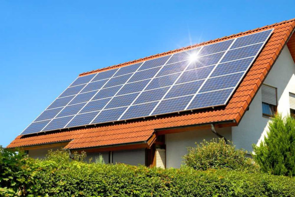

Fontes de energias renováveis e energias não renováveis
Qual a diferença entre fontes de energia renováveis e não renováveis?
A diferença entre as fontes de energia renováveis e não renováveis é que as renováveis utilizam recursos que não se esgotam ou se regeram na natureza. Já as fontes de energia não renováveis utilizam recursos que se esgotam na natureza e, por isso, podem gerar diversos problemas para o meio ambiente.

Assim, os diferentes tipos de energia podem ser produzidos por fontes de energias renováveis (solar, eólica, hidrelétrica, geotérmica, biomassa, etc.) e fontes de energia não renováveis (combustíveis fósseis e energia nuclear).
Fontes de energia renováveis
As fontes de energia renováveis são extraídas de elementos que continuarão presentes no planeta, como na utilização da força dos ventos (eólica), dos mares e rios (hidrelétrica) ou das ondas luminosas do Sol (solar).
Energia Eólica
Como funciona a energia eólica. A energia do vento é transformada em energia elétrica através de um equipamento chamado turbina eólica (ou aerogerador), os quais incluem hélices que se movimentam com a velocidade do vento
Quer saber mais sobre? Clique Aqui
Energia Solar
Energia solar é um termo que se refere à energia proveniente da luz e do calor do Sol. É utilizada por meio de diferentes tecnologias em constante evolução, como o aquecimento solar, a energia solar fotovoltaica, a energia heliotérmica, a arquitetura solar e a fotossíntese artificial
Quer saber mais sobre? Clique Aqui
Energia hidrelétrica
A energia hidrelétrica é aquela obtida pela força das águas. Essa energia é produzida pelo aproveitamento do potencial hidráulico, ou seja,da força das águas dos rios, mediadas pela construção de usinas hidrelétricas, aquelas que fornecerão energia elétrica para a população.
Quer saber mais sobre? Clique Aqui
Biomassa
Biomassa é toda matéria orgânica, de origem vegetal ou animal, utilizada na produção de energia. Ela é obtida através da decomposição de uma variedade de recursos renováveis, como plantas, madeira, resíduos agrícolas, restos de alimentos, excrementos e até do lixo.
Energia geotérmica

A Energia Geotérmica (ou Energia Geotermal) é um tipo de energia renovável obtida através do calor proveniente do interior do planeta terra. O processo de aproveitamento dessa energia é feito por meio de grandes perfurações no solo, visto que o calor do nosso planeta existe numa parte abaixo da superfície da Terra.
Quer saber mais sobre? Clique Aqui
Fontes de energia não renováveis
As fontes de energia não renováveis são extraídas de elementos encontrados na natureza e que tendem a acabar, como o combustível fóssil (petróleo, carvão mineral, gás natural, etc.) ou os elementos radioativos usados nas usinas nucleares (urânio, plutônio, etc.).
Combustíveis fósseis
Derivados do petróleo ou carvão mineral são usados como combustíveis para o funcionamento de máquinas e motores. Essa ainda é a principal fonte de energia utilizada no planeta..
Usinas nucleares
Em uma usina nuclear, a fissão (quebra) de elementos como o urânio gera calor. Esse princípio é o mesmo utilizado nas bombas atômicas. Entretanto, nas usinas nucleares, o calor gerado aquece a água e o vapor dessa água movimenta a turbina de um gerador de energia elétrica
O descarte de dejetos radioativos e o risco de acidentes, como o ocorrido em Chernobyl (1986) preocupam ambientalistas e governos.